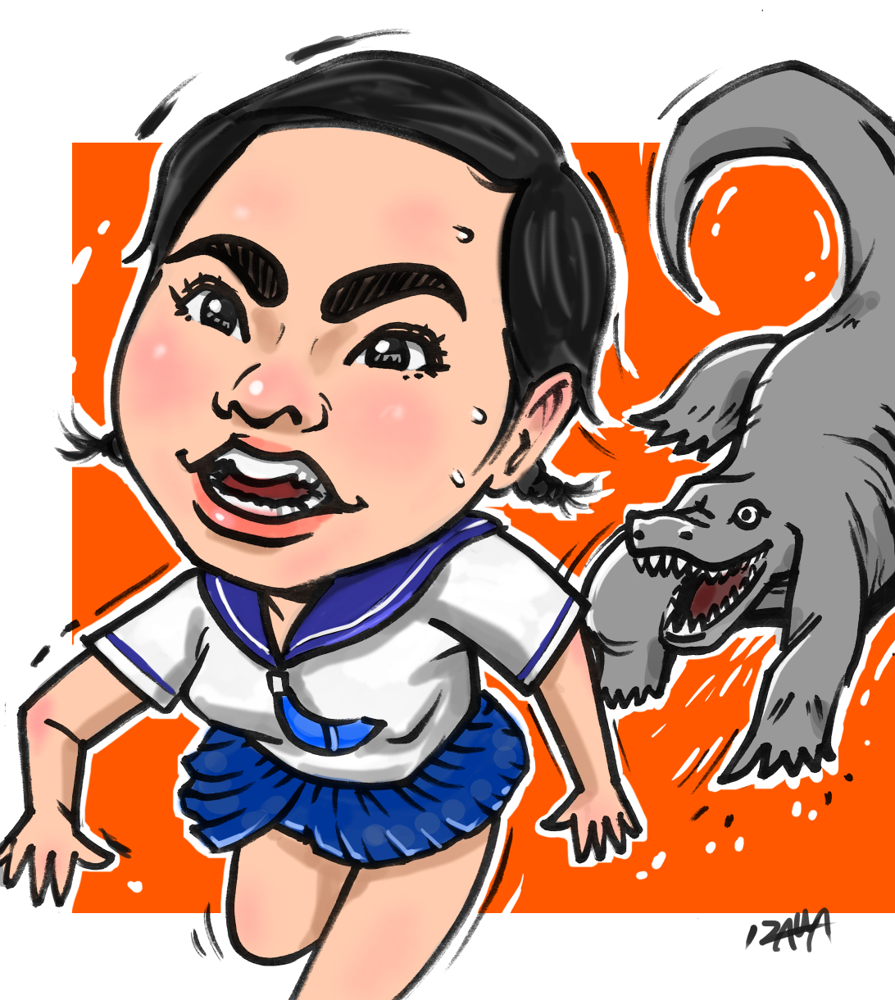

似顔絵部門
-

あいみょんさん
彼女の歌をよく聞くのでかいてみました。唇が魅力的です。
-

イモトアヤコさん
テレビ番組の「イッテQ」でコモドドラゴンに追いかけられている様子が
印象的でした。追いかけられている感がイイ感じにかけました。 -
AKB 前田敦子さん
サマーソング特集でAKBを久しぶりに聞いて描きました。
夏といえば水着ですね。
いざわたかしのギャラリーページ
似顔絵テーブルに置かれた５つのみかん。みかんの置き方によって、リズムを感じられるような配置を考えた。青いインクペンでスケッチのラフな感じでささささっと書きあげた。最高傑作。
すごいとくちょうすごいとくちょうすごいとくちょうすごいとくちょうすごいとくちょうすごいとくちょうすごいとくちょうすごいとくちょうすごいとくちょうすごいとくちょう
彼女の歌をよく聞くのでかいてみました。唇が魅力的です。
テレビ番組の「イッテQ」でコモドドラゴンに追いかけられている様子が
印象的でした。追いかけられている感がイイ感じにかけました。
サマーソング特集でAKBを久しぶりに聞いて描きました。
夏といえば水着ですね。